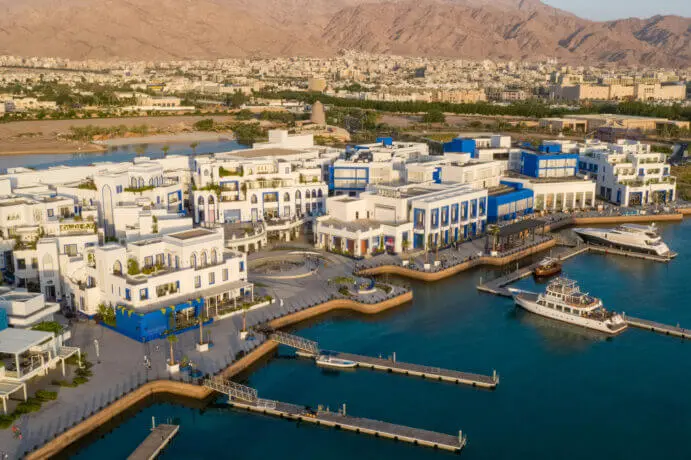
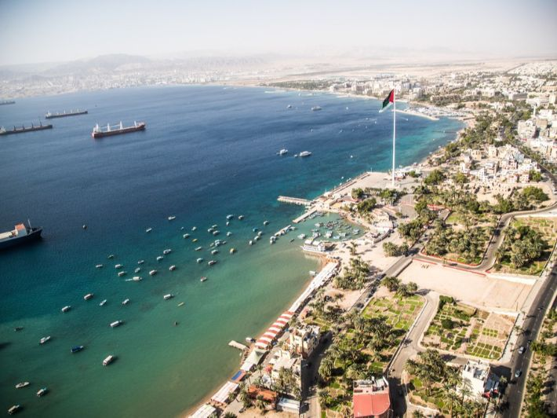
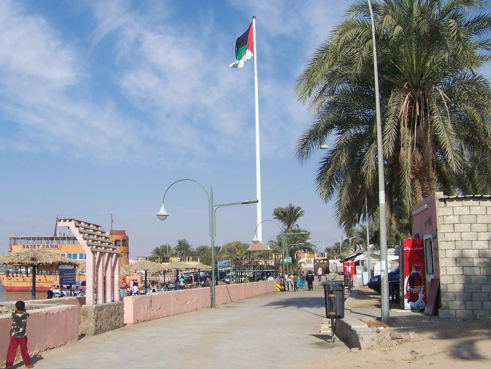

نكهات لا تُنسى
تشتهر العقبة بمطبخها المتنوع الذي يجمع بين الأطباق الأردنية الأصيلة والمأكولات البحرية الطازجة

مطعم فخارة
من أشهر مطاعم العقبة، يقدم أطباق المأكولات البحرية الطازجة بأسلوب أردني أصيل. يتميز بإطلالته الرائعة على البحر الأحمر.

مطعم القمر العربي
يقدم أشهى الأطباق الأردنية التقليدية كالمنسف والمقلوبة والكنافة. أجواء دافئة وخدمة ممتازة تجعله وجهة مفضلة للعائلات.

مطعم كورنيش العقبة
يقع مباشرة على الكورنيش البحري ويقدم مجموعة متنوعة من الأطباق الشرقية والغربية مع إطلالة ساحرة على البحر ليلاً.

مطعم أيلة مارينا
مطعم راقٍ يقع في مرسى أيلة يقدم المأكولات البحرية الفاخرة والأطباق الدولية. يتميز بتصميمه العصري وأجوائه الرومانسية.

مطعم أبو علي الشعبي
مطعم شعبي أصيل يقدم أطباق الفول والحمص والفلافل والكبدة. وجهة مفضلة للسكان المحليين والسياح الباحثين عن النكهة الأصيلة.

مقهى البحر الأحمر
مقهى هادئ يطل على البحر الأحمر يقدم القهوة العربية والمشروبات الطازجة والحلويات الشرقية. مكان مثالي للاسترخاء ومشاهدة الغروب.